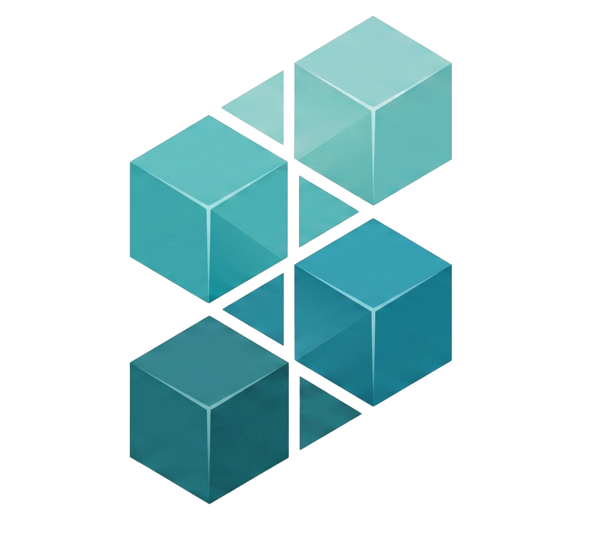

ملخص سريع للمقال بواسطة نموذج سرد الذكي.
اضغط على الزر أعلاه لتوليد ملخص سريع للمقال بواسطة نموذج سرد الذكي.

اكتشف أحدث أخبار الذكاء الاصطناعي، أدوات الأتمتة، وتقنيات المستقبل بطريقة عربية عصرية.
تصفح كامل المقالات والتحليلات المتخصصة المكتوبة بأقلام خبراء سرد.
اضغط على الزر أعلاه لتوليد ملخص سريع للمقال بواسطة نموذج سرد الذكي.
نحن منصة إعلامية متخصصة تسعى لإثراء المحتوى العربي في مجالات الذكاء الاصطناعي، وأتمتة الأعمال، والإنتاجية الرقمية بأسلوب تحريري راقٍ وبسيط.
تُكتب مقالاتنا بعناية فائقة وتُراجع علمياً وعملياً على أيدي خبراء في التقنية والأعمال لضمان جودة المحتوى وفائدته الحقيقية.
نؤمن في "سرد" بأن تجربة القراءة لا تقل أهمية عن الكلمات نفسها. لذا صممنا موقعنا بأسلوب ميريمال صحفي مريح للعين، مستوحى من جماليات التصميم الإسكندنافي الفاخر.
نسلط الضوء على الأدوات العملية والأتمتة التي يمكن لكل موظف ورائد أعمال تطبيقها فوراً لتحسين كفاءته وزيادة إنتاجية أعماله.
"التكنولوجيا الحقيقية ليست تلك التي تعقد حياتنا، بل تلك التي تمنحنا وقتاً أكبر للتركيز على الجوانب الأكثر إنسانية وإبداعاً في أعمالنا."— هيئة التحرير، سرد 2026